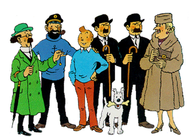

About Tintin
Tintin is the protagonist of The Adventures of Tintin, the world-famous comic series by Belgian cartoonist Hergá Tintin lives in Brussels with his dog Snowy. The first episode of The Adventures of Tintin was released in 1930. Tintin is a journalist.
Tintin and his friends
Tintin's Characteristics
- He works for the newspaper Le petit vingtieme.
- He travels to the five continents.
Tintin's friends
Tintin has many friends, such as Captain Haddock and Professor Calculus. Click on the links below to read more about them: